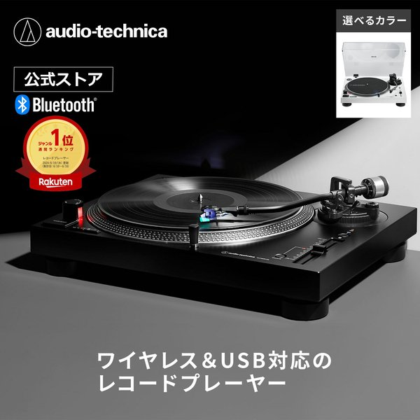
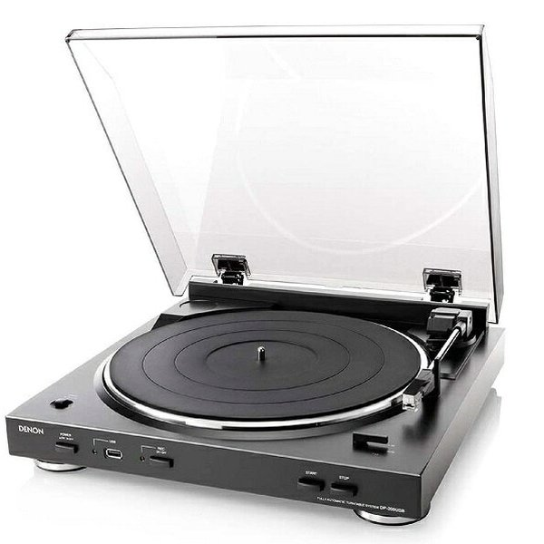
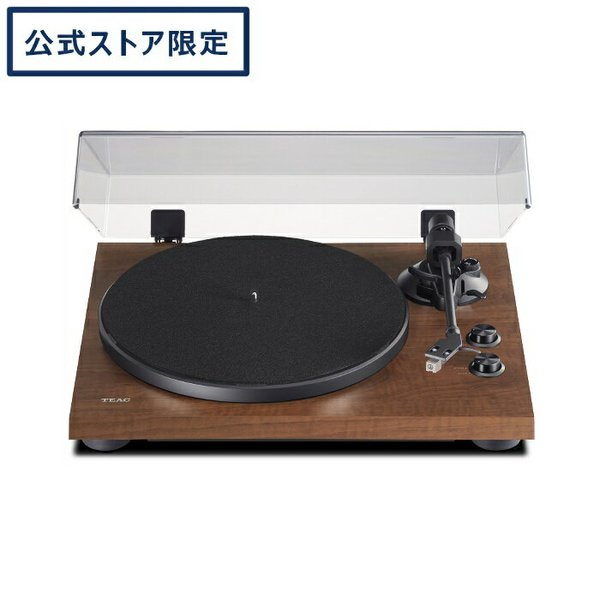
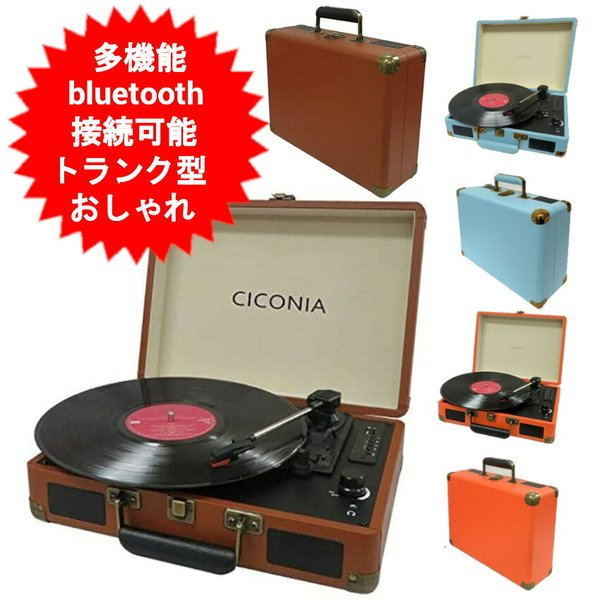
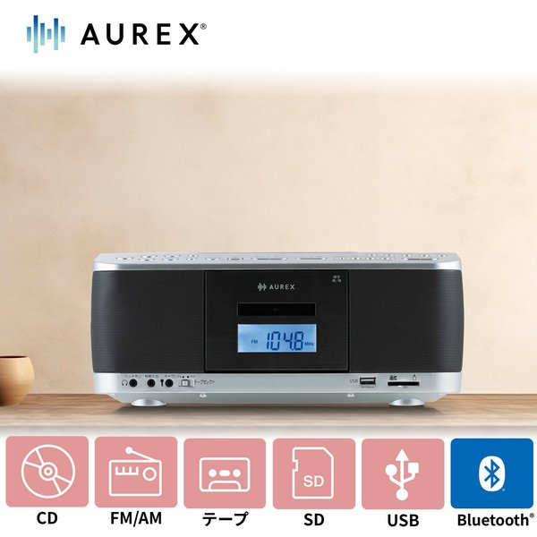
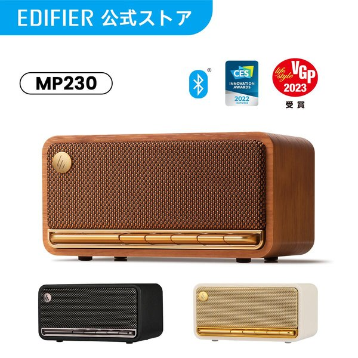
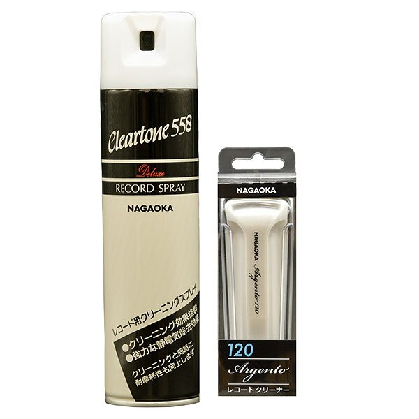
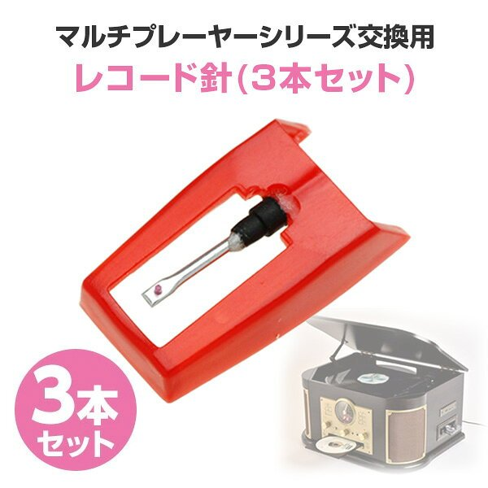
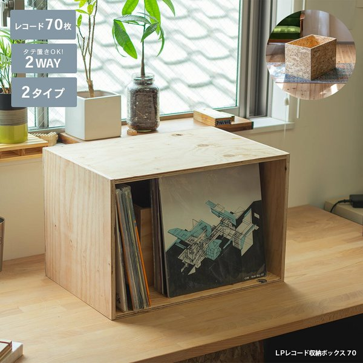
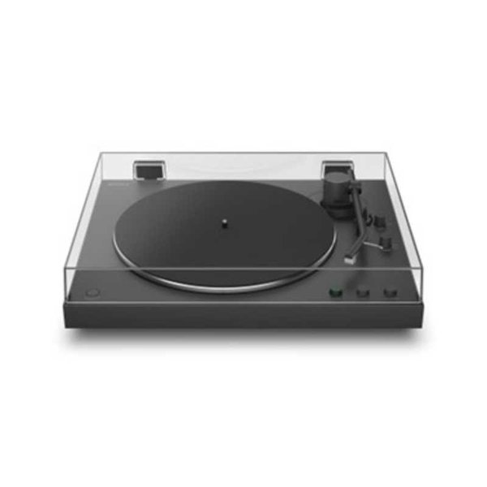

【2026年・レコードプレーヤー＆レトロオーディオ10選】オーディオテクニカ AT-LP120XBT-USB・デノン DP-200USB・ティアック TN-280BT・CICONIA チコニア・東芝 AUREX CDラジカセ・EDIFIER MP230・NAGAOKA クリーナー・とうしょう 交換針・IEMOK レコードボックス・ソニー PS-LX3BTを実売価格で比較
レコードは、プレーヤーを1台置くだけで日常の音楽の聴き方が変わります。ジャケットを選んで針を落とすまでの手間が、そのまま音楽を聴く時間になります。
選ぶ軸は3つです。まずスピーカーがあるか。スピーカー内蔵機なら届いた日に鳴らせて、単体プレーヤーなら手持ちのスピーカーやBluetooth機器につなぎます。次に録音できるか。USBやSDに残せる機種なら、持っているレコードをデジタルでも聴けます。最後に手入れ。針と盤のクリーナーがあると、プチノイズが減って同じ盤が澄んで聴こえます。
本記事では、楽天市場で人気・高評価のレコードプレーヤー・CDラジカセ・レトロオーディオ10選を、実売価格とレビュー評価つきで写真付き紹介します。
- おすすめ10選 スペック・特徴比較表
- BEST 1｜オーディオテクニカ AT-LP120XBT-USB レコードプレーヤー
- BEST 2｜デノン DP-200USB レコードプレーヤー
- BEST 3｜ティアック TN-280BT アナログレコードプレーヤー
- BEST 4｜CICONIA チコニア レコードプレーヤー スピーカー内蔵 トランク型
- BEST 5｜東芝 AUREX CDラジカセ TY-CDX92
- BEST 6｜EDIFIER MP230 ポータブルスピーカー Bluetooth 木製
- BEST 7｜NAGAOKA レコードクリーナーセット SP558
- BEST 8｜とうしょう 交換針 3P レコード針 サファイア3個入り TO-106
- BEST 9｜IEMOK レコードボックス 70枚 木製
- BEST 10｜ソニー PS-LX3BT ブルートゥース対応レコードプレーヤー
- 【読者負担0円】買わなくても得する無料サービス
- まとめ：レコードプレーヤー・レトロオーディオ10選の選び方
| 順位 | 商品名 | ブランド | 最大の特徴・おすすめ理由 | 総合評価 |
|---|---|---|---|---|
| BEST 1 | オーディオテクニカ AT-LP120XBT-USB レコードプレーヤー | オーディオテクニカ（audio-technica） | Bluetoothでワイヤレス再生できる | 4.58 |
| BEST 2 | デノン DP-200USB レコードプレーヤー | デノン（Denon） | USBメモリーに直接録音できる | 4.43 |
| BEST 3 | ティアック TN-280BT アナログレコードプレーヤー | ティアック（TEAC） | Bluetooth送信でワイヤレス再生できる | 4.67 |
| BEST 4 | CICONIA チコニア レコードプレーヤー スピーカー内蔵 トランク型 | CICONIA（チコニア） | スピーカー内蔵でこれ1台で鳴る | 4.34 |
| BEST 5 | 東芝 AUREX CDラジカセ TY-CDX92 | 東芝（AUREX） | CD・SD・USB・Bluetoothに対応 | 4.66 |
| BEST 6 | EDIFIER MP230 ポータブルスピーカー Bluetooth 木製 | EDIFIER | 木製キャビネットのレトロな見た目 | 4.72 |
| BEST 7 | NAGAOKA レコードクリーナーセット SP558 | NAGAOKA | 盤・ブラシ・針クリーナーが揃う | 4.64 |
| BEST 8 | とうしょう 交換針 3P レコード針 サファイア3個入り TO-106 | トウショウ（TO-106） | 3個入りで予備にできる | 5.00 |
| BEST 9 | IEMOK レコードボックス 70枚 木製 | IEMOK（イエモク） | 70枚収納で棚がなくても置ける | 4.72 |
| BEST 10 | ソニー PS-LX3BT ブルートゥース対応レコードプレーヤー | ソニー（SONY） | フルオートで針を落とせる | 5.00 |
オーディオテクニカ AT-LP120XBT-USB レコードプレーヤー

オーディオテクニカのダイレクトドライブ式レコードプレーヤーです。Bluetoothでワイヤレススピーカーに飛ばせて、USBでパソコンに録音もできます。回転の立ち上がりが速く、DJ用途にも使える作りです。楽天市場での実売価格は約47,520円（2026年11月時点）。
- Bluetoothでワイヤレス再生できる
- USB出力でレコードをデジタル化できる
- ダイレクトドライブで回転が安定する
- 本体が大きく重いので、置き場所の奥行きを測ってから買う
デノン DP-200USB レコードプレーヤー

デノンのレコードプレーヤーです。USBメモリーに直接録音できるので、パソコンを立ち上げずにレコードをデジタルに残せます。フォノイコライザーを内蔵していて、アンプがなくてもスピーカーに直接つなげます。楽天市場での実売価格は約22,000円（2026年11月時点）。
- USBメモリーに直接録音できる
- フォノイコ内蔵で単体でも使える
- フルオートで針を落とせる
- レビューが7件と少なく、動作音は実際に使って確かめたい
ティアック TN-280BT アナログレコードプレーヤー

ティアックのベルトドライブ式レコードプレーヤーです。Bluetoothのトランスミッターを内蔵していて、ワイヤレススピーカーやイヤホンに飛ばせます。木目のキャビネットで、部屋に置いたときの見た目も落ち着きます。楽天市場での実売価格は約34,980円（2026年11月時点）。
- Bluetooth送信でワイヤレス再生できる
- 木目キャビネットで見た目が良い
- フォノアンプを内蔵している
- レビューが3件と少なく、針やアームの調整は実機で確かめたい
CICONIA チコニア レコードプレーヤー スピーカー内蔵 トランク型

トランク型のケースにスピーカーを内蔵したレコードプレーヤーです。ふたを開けてレコードを置くだけで音が出るので、アンプもスピーカーも別に用意する必要がありません。Bluetoothでスマホからも飛ばせます。楽天市場での実売価格は約10,979円（2026年11月時点）。
- スピーカー内蔵でこれ1台で鳴る
- トランク型で持ち運べる
- USB録音にも対応している
- 内蔵スピーカーなので、音の広がりは単体スピーカーに劣る
東芝 AUREX CDラジカセ TY-CDX92

東芝AUREXのCDラジカセです。CDの再生に加えて、SDカードとUSBメモリーの再生・録音ができます。Bluetoothの受信に対応しているので、スマホの音楽も本体のスピーカーで鳴らせます。ワイドFMの受信にも対応しています。楽天市場での実売価格は約18,280円（2026年11月時点）。
- CD・SD・USB・Bluetoothに対応
- SDやUSBに録音できる
- ワイドFMが受信できる
- レビューが41件と50件未満なので、スピーカーの音質は実際に聴いて確かめたい
EDIFIER MP230 ポータブルスピーカー Bluetooth 木製

EDIFIERの木製キャビネットのポータブルスピーカーです。レトロなラジオのような見た目で、Bluetoothで接続して20Wの出力で鳴らせます。充電式で9時間ほど再生でき、部屋から部屋へ持ち運べます。楽天市場での実売価格は約11,990円（2026年11月時点）。
- 木製キャビネットのレトロな見た目
- 20W出力で音量に余裕がある
- 充電式で持ち運べる
- 低音を強調した音作りなので、声だけを聴く用途では好みが分かれる
NAGAOKA レコードクリーナーセット SP558

NAGAOKAのレコードクリーナーセットです。レコード盤用のクリーニングスプレーとブラシ、針先クリーナーがまとまっています。盤のほこりを取ると、プチノイズが減って音が澄みます。楽天市場での実売価格は約2,980円（2026年11月時点）。
- 盤・ブラシ・針クリーナーが揃う
- 静電気を除去してほこりを寄せ付けない
- 日本製のレコード針メーカーの品
- レビューが28件と50件未満なので、液の残り香は開けて確かめたい
とうしょう 交換針 3P レコード針 サファイア3個入り TO-106

レコードプレーヤーの交換用針の3個セットです。サファイア製の丸針で、汎用のプレーヤーに取り付けて使います。針が摩耗すると音がこもるので、予備を1個持っておくと安心です。楽天市場での実売価格は約3,280円（2026年11月時点）。
- 3個入りで予備にできる
- 丸針で汎用プレーヤーに合う
- 価格が手ごろ
- レビューが2件と非常に少なく、対応機種は購入前に説明を確認したい
IEMOK レコードボックス 70枚 木製

IEMOKのレコード収納ボックスです。LPレコードを70枚ほど立てて収められ、木の箱なので部屋に置いたままでも見栄えがします。前面から出し入れできるので、聴くたびに箱を動かさずに済みます。楽天市場での実売価格は約8,000円（2026年11月時点）。
- 70枚収納で棚がなくても置ける
- 木製でインテリアになじむ
- 前面から出し入れできる
- レビューが36件と50件未満なので、板のにおいと塗装の仕上げは届いてから確かめたい
ソニー PS-LX3BT ブルートゥース対応レコードプレーヤー

ソニーのBluetooth対応レコードプレーヤーです。フルオート式で、ボタンを押すとアームが自動で動いて針を落とします。ハイレゾ相当の伝送に対応し、パソコンにつないで録音もできます。フォノイコライザーを内蔵しています。楽天市場での実売価格は約33,610円（2026年11月時点）。
- フルオートで針を落とせる
- Bluetoothでワイヤレス再生できる
- フォノイコ内蔵で単体でも使える
- レビューが1件のみなので、動作感や音質は発売後の評判も見て決めたい
この記事の商品を買う前に、まずは無料で得する選択肢をチェック。どれも登録・利用は0円で、無料期間中に解約すれば料金はかかりません。読みたい雑誌がある人、ポイントを貯めたい人、アンケートなら気軽という人、それぞれに合うものを選べます。
初回31日無料・無料期間中に解約すれば0円 → 楽天ポイントモール｜登録無料で毎日ポイ活
買い物なしでもポイントが貯まる無料サービス → 楽天インサイト｜アンケートに答えてポイント
登録無料・すきま時間のアンケートで貯まる → 楽天カード｜年会費永年無料
新規発行・年会費ずっと0円 →
4つのサービスの違いと使い分けは「出費0円で得する！買わずにポイントが貯まる無料サービス厳選4選」でまとめています。
💡 まとめ：レコードプレーヤー・レトロオーディオ10選の選び方
レコードを聴き始めるときは、鳴らす方法を先に決めると迷いません。手持ちのスピーカーに送るならオーディオテクニカのAT-LP120XBT-USBかソニーのPS-LX3BT、木目の見た目を優先するならティアックのTN-280BT。アンプを用意せずに始めるなら、スピーカー内蔵のCICONIA、録音もしたいならデノンのDP-200USB。CDやラジオも一緒に聴くなら東芝AUREXのCDラジカセ、部屋に置くスピーカーはEDIFIERのMP230。盤の手入れはNAGAOKAのクリーナーセット、針の予備はとうしょうの交換針、収納はIEMOKのレコードボックス。プレーヤーを決めてから、手入れと収納を足す順番が、結果的に長く聴けます。
楽天市場では「5と0のつく日」や「お買い物マラソン」などのキャンペーンに合わせて購入すると、ポイント還元が最大化してお得に手に入ります。ぜひチェックしてみてくださいね。